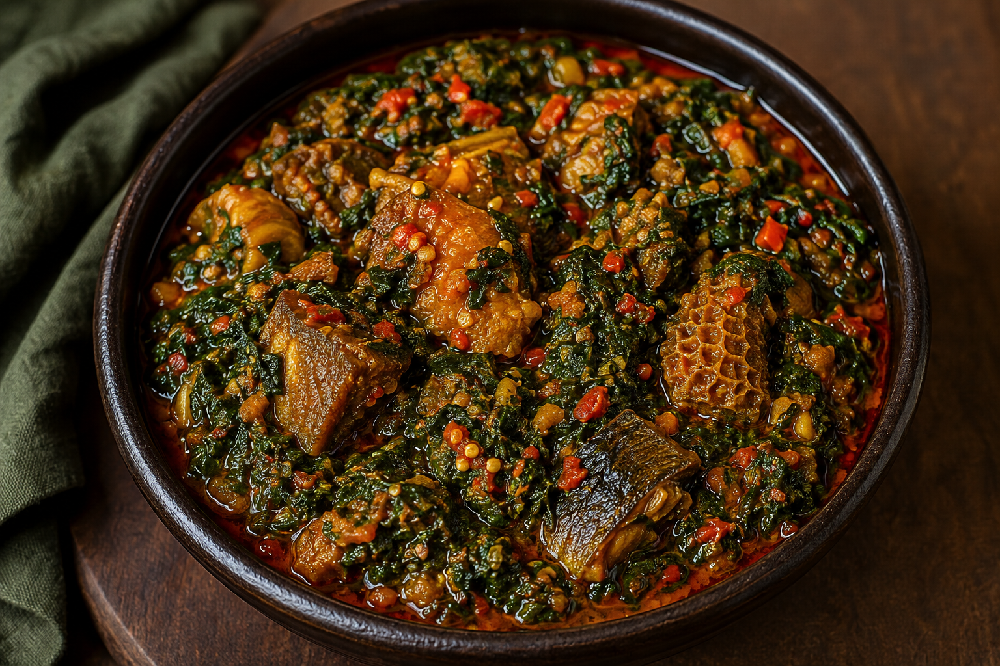

CLASSICS
Ẹ̀fọ́ Rírọ̀
Rich Yoruba-style spinach stew with peppers, palm oil and carefully selected proteins.
A TASTE OF AFRICA, REIMAGINED.
LAGOS · NIGERIAORÍSA is a celebration of Yorùbá food, culture and hospitality — presented through a contemporary lens.
Every plate carries a story. Every ingredient has a place. Every meal is an invitation to experience Nigeria differently.
Familiar dishes. Deep flavours. A refined expression of Yorùbá culinary tradition.
From the warmth of the room to the final taste on the plate, ORÍSA is designed as an experience of contemporary Nigerian hospitality.
A contemporary Yorùbá dining experience in the heart of Lagos.
MAKE A RESERVATION